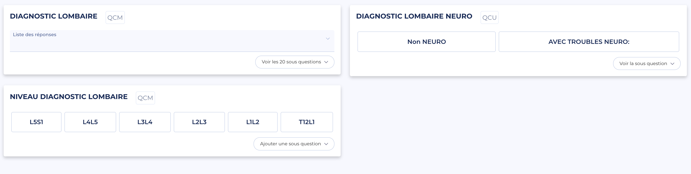

#02/12
Questionnaire
4L
Diagnostic lombaire

Étape
Diagnostic préopératoire
Durée chir
≈ 30 secondes
Chirurgien
100%
1D
2L
ODI
8L
4L
5L
6a
6b
1M
3M
6M
1A
2A
Le chiffre
6
DIAGNOSTICS
Le diagnostic fait la chir
Voie d'abord, niveaux, matériel, séjour : tout en découle.
Pour toi
6 diagnostics → 6 chirs
Hernie discale
Cure de hernie · Libération
L4L5, L5S1… + côté
Canal lombaire étroit
Libération ± arthrodèse
Niveaux instrumentés à préciser
Spondylolisthésis (dégé. & lytique)
Libération ± arthrodèse selon instabilité · Chir antérieure / postérieure
Niveau instrumenté
Discopathie dégénérative
Arthrodèse / Prothèse / ALIF
Niveau cible 1 ou 2 étages
Pseudarthrose
Fixation
Niveau instrumenté
Sténose foraminale
Libération ciblée · Libération + arthrodèse
Niveau + côté (pour chacune des 2 options)
Niveau
L5S1
L4L5
L3L4
L2L3
L1L2
T12L1
Troubles neuro
Décris la racine touchée, le côté, l'échelle motrice.
Pourquoi ça compte
Pourquoi hiérarchiser le diagnostic
Le diagnostic conditionne tout : voie d'abord, niveaux, matériel, durée de séjour.
Ces 6 familles couvrent l'essentiel de la chir lombaire programmée.
Sans diagnostic clair, pas de programmation : la 5L attend cette case.
C'est aussi la variable cible des études SRC : sténose vs HD, arthrodèse vs libération.
Scoliose dégénérative : exclue de la 4L, réservée à la série scoliose.
4L · #02/12 · 2026-05-11